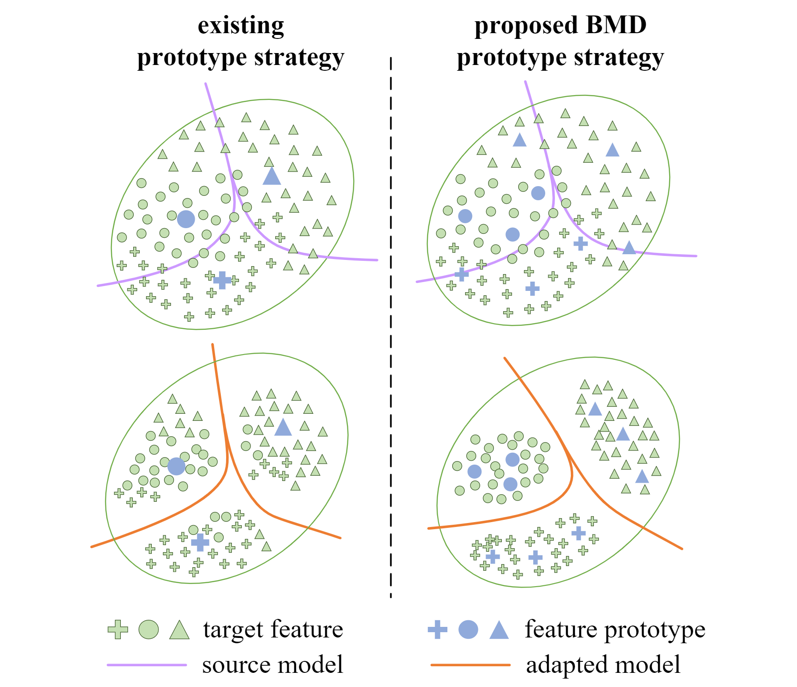
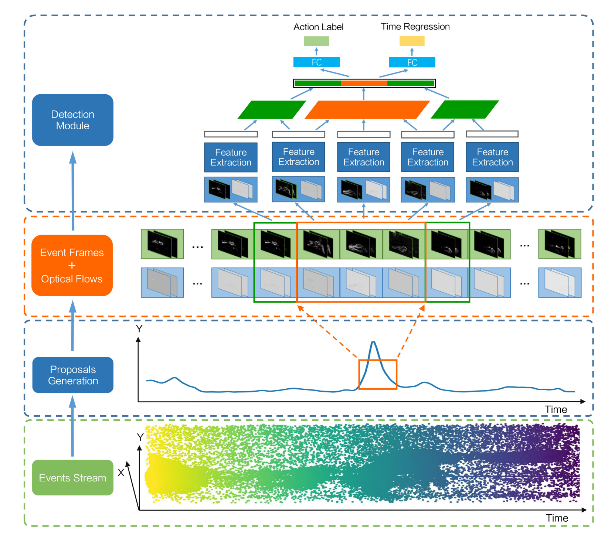
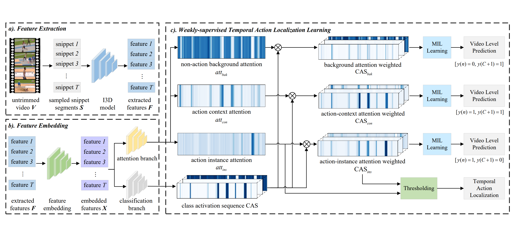

|
News
2022.07 : Our work (BMD) on source-free domain adpatation is accepted by ECCV-2022!
2022.03 : One paper is accepted by IEEE T-Cyber (IF=19.118)!
2021.03 : Our work (ACM-Net) on weakly-supervised temporal action localization is released!
|
|
Education
2020.09 ~ Present : PhD student in Automotive Engineering, Tongji University.
2015.09 ~ 2020.07: Bachelor's Degree in Automotive Engineering, Tongji University.
|
|
Selected Publications
* indicates equal contribution
|
|

|
BMD: A General Class-balanced Multicentric Dynamic Prototype Strategy for Source-free Domain Adaptation
Sanqing Qu,
Guang Chen,
Jing Zhang,
Zhijun Li , Wei He,
Dacheng Tao
European Conference on Computer Vision (ECCV), 2022
[arXiv]
[Code]
We propose a general prototype based pseudo-labeling strategy. It is model-agnostic and can be applied to
existing self-training based SFDA methods.
|
|

|
Neuromorphic Vision-based Fall Localization in Event Streams with Temporal–spatial Attention Weighted Network
Guang Chen*,
Sanqing Qu*,
Zhijun Li ,
Haitao Zhu, Jiaxuan Dong, Min Liu,
Jorg Conradt.
IEEE Transactions on Cybernetics. (T-Cyber), 2022
[IEEE]
In this paper, we proposed a bio-inspired event-camera based falls temporal localization framework.
Specifically, we propose a event density-based action proposal generation scheme, and introduce a temporal-spatial attention mechanism for action modeling.
|
|

|
ACM-Net: Action Context Modeling Network for Weakly-supervised Temporal Action Localization
Sanqing Qu,
Guang Chen*,
Zhijun Li ,
Lijun Zhang,
Fan Lu ,
Alois Knoll.
Arxiv Pre-print, 2021
[arXiv]
[Code]
In this paper, we propose an action-context modeling network termed ACM-Net, which integrates a three-branch attention module to measure the likelihood of each temporal point being action instance, context, or non-action background, simultaneously.
|
|
Honors and Awards
2022, 2021 : The Outstanding Doctoral Student Scholarship of Tongji University
2020 : The Shanghai Outstanding Graduate
2020 : The Second Prize of National Graduate Student Mathematical Modeling Contest
2019 : The BaoGang Scholarship (宝钢教育奖)
2018 : Rank 4th in 2018 Corolo-Cup of Germany Graduate Students
|
© Sanqing Qu | Last updated: Feb 18, 2023
|
{kind=link}